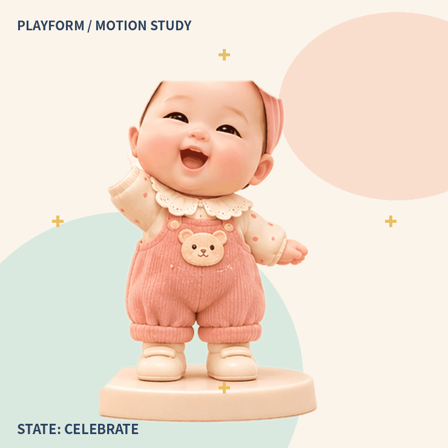

CASE 13 / INTERACTIVE STORY DEMO
形狀城的第七座橋
故事共有 16 個跨頁。閱讀由使用者手動控制；造橋互動屬展示用途，不收集個人資料。

01 / 16
STORY-LINKED BUILDING
幫路洛完成一座橋
依照繪本的步驟，選擇零件、放好橋墩，再加上橋拱。這是概念互動，不代表實際承重測試。
從「放好兩邊橋墩」開始。
ROLE OF THE MASCOT
角色的回饋跟著故事走

互動規則：每個步驟有明確目標，不設倒數或答錯扣分。朗讀、聲音提示與角色動畫均需提供控制選項。
這是獨立演示原型；正式網頁仍以 Antigravity 本機分支現有互動功能為準。